Filtros de cámara: que el juego se vea antiguo, con píxeles y con otras formas
En esta página
Los filtros de cámara cambian cómo se ve la imagen del juego, después de dibujar la escena: píxeles grandes, pocos colores como una consola antigua, una tele de tubo, una cinta VHS, cine mudo, cómic, letras ASCII, visión nocturna...
- Van en el componente Filtros de cámara de la entidad de la cámara.
- Son una pila: cada filtro trabaja sobre lo que deja el anterior, en orden.
- Cada filtro se puede activar o desactivar y tiene su intensidad (0 a 1) y sus parámetros.
- Hay preajustes listos para elegir («PS1», «Game Boy», «Tele de los 80»...). Rellenan la pila y luego se puede retocar.
- Desde Lua se ponen, se quitan y se hacen transiciones (
camara:FadeFilter("VHS", 0, 2.0)): para golpes, flashbacks o cámaras de seguridad. - Para juegos de terror, la cámara de vigilancia con su texto («● REC», la fecha y la hora, el nombre de la cámara), los cortes de señal y la estática del cambio de cámara (sección 4).
- Sin filtros no cuestan nada: el render es exactamente el de siempre.
Índice#
- Ponerlos en el editor
- Preajustes
- Los filtros
- Cámara de vigilancia, CRT y VHS
- La interfaz y el arma en primera persona
- Desde Lua
- Rendimiento
- Límites
1. Ponerlos en el editor#
- Elige la cámara en la Jerarquía.
- Inspector > Añadir componente > Render > Filtros de cámara.
- En el desplegable de arriba, elige un preajuste, o pulsa Añadir filtro y elige uno de la lista (por categorías: Retro, Formas y estilos, Visión y Utilidad).
- Cada filtro tiene una fila con:
- la casilla para activarlo o desactivarlo;
- su nombre (pulsa para ver sus opciones: intensidad, parámetros, «Afecta a la interfaz» y «Afecta a la capa de vista»);
- las flechas para subirlo (se aplica antes) o bajarlo, y la cruz para quitarlo.
Lo que cambias se ve al momento en los visores Escena y Juego:
- El visor Juego enseña los filtros de la cámara principal.
- El visor Escena enseña los de la cámara elegida (si tiene filtros) o los de la principal.
- El botón con el icono de imagen de la barra del visor (junto a Mostrar) enciende o apaga la vista previa de los filtros. Sirve para editar el mapa sin ellos.
Todo se puede deshacer (Ctrl+Z) y funciona en la edición en equipo como cualquier otro cambio del Inspector.
2. Preajustes#
| Preajuste | Nombre en Lua | Filtros |
|---|---|---|
| PS1 | "PS1" |
Pixelado a 320x240, 15 bits de color con tramado Bayer, vértices que tiemblan y texturas sin filtrar |
| Game Boy | "GameBoy" |
160x144 con los 4 verdes de la Game Boy y tramado |
| Tele de los 80 | "RetroTV" |
Aberración cromática y tele de tubo (líneas, fósforo, cristal curvo) |
| VHS | "VHS" |
Cinta de terror: la cámara de vigilancia en estilo cinta (color algo apagado, colores separados, ruido, cortes de señal, «PLAY ▶» y la fecha). Hasta la 0.9.45 era desaturar + el filtro VHS: esa pila se puede seguir montando a mano |
| Cámara de vigilancia | "SecurityCam" |
Cámara de seguridad de terror: verde grisácea, curva, con ruido, nieve, cortes de señal, «● REC», la fecha y la hora y el nombre de la cámara |
| Película muda | "SilentFilm" |
Desenfoque suave y película en blanco y negro con grano, rayas, polvo y saltos |
| Cómic | "Comic" |
Puntos de trama en las sombras, colores planos y contorno |
| Visión nocturna | "NightVision" |
Verde, más luz, grano y el borde del visor |
| Térmica | "Thermal" |
Desenfoque y paleta de calor (hierro) |
| Pixel art moderno | "PixelArt" |
Contorno, colores planos y píxeles grandes (270 líneas) |
| Cartoon antiguo | "OldCartoon" |
Dibujos animados de los años 30: copia de cine algo blanda, color cálido y apagado, grano, viñeta, rayas, polvo y parpadeo (ver juegos-2d.md) |
Estas capturas son de la plantilla Mundo abierto (game/mundo_abierto_lua), en el visor Juego:
| Sin filtros | PS1 | Game Boy |
|---|---|---|
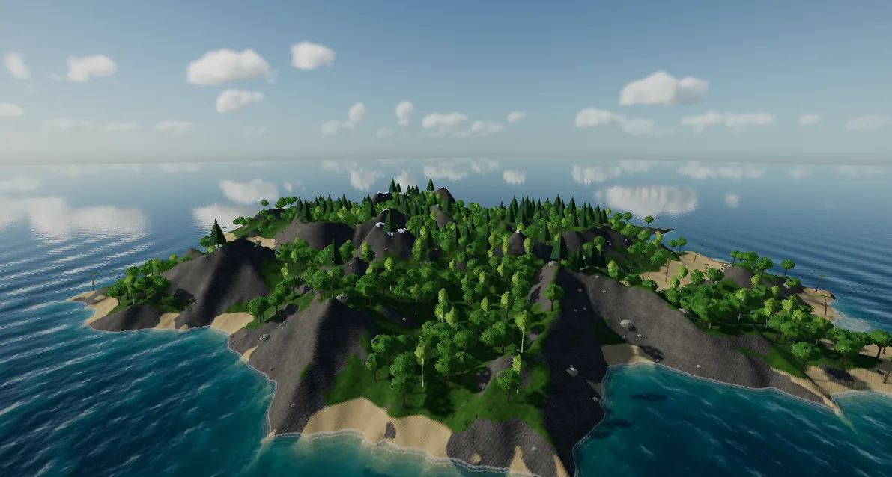 |
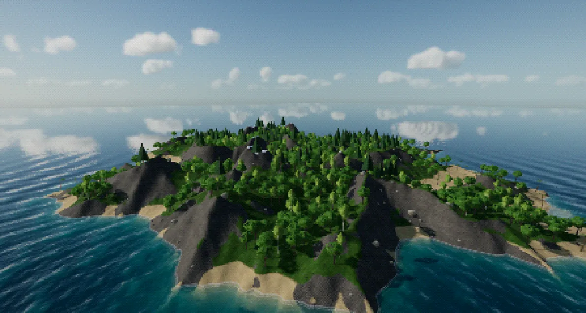 |
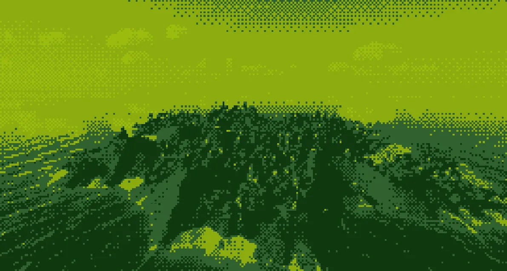 |
| Tele de los 80 | VHS (la pila de antes de la 0.9.46: desaturar + VHS) | Película muda |
|---|---|---|
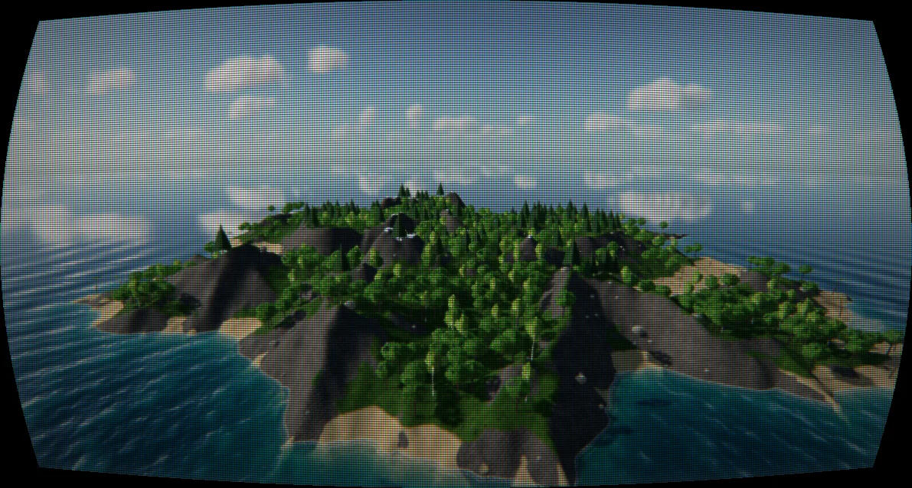 |
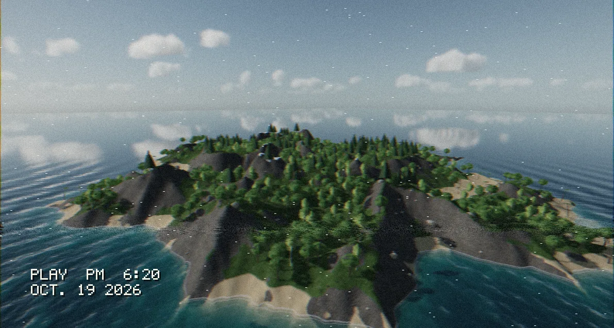 |
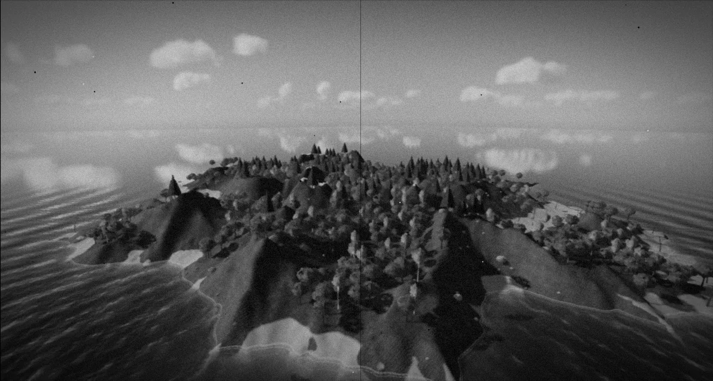 |
| Cómic | Visión nocturna | Térmica |
|---|---|---|
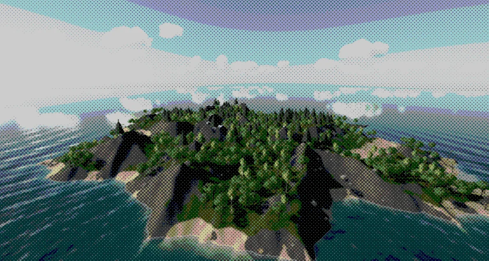 |
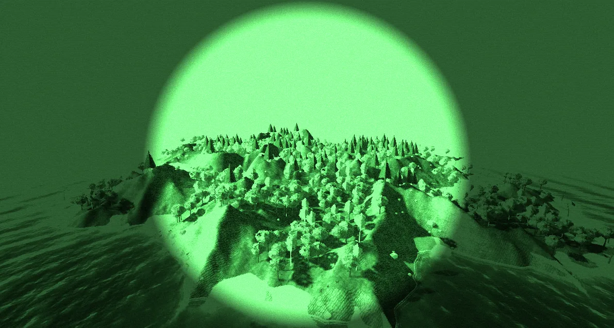 |
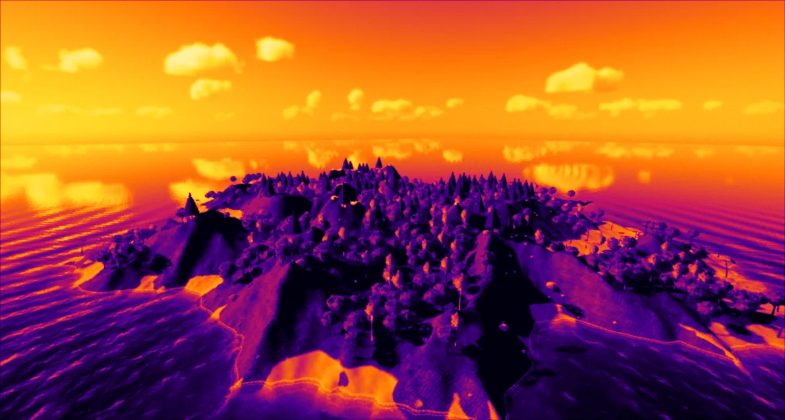 |
| Pixel art moderno | Cartoon antiguo |
|---|---|
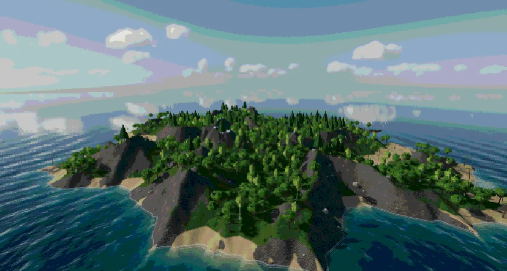 |
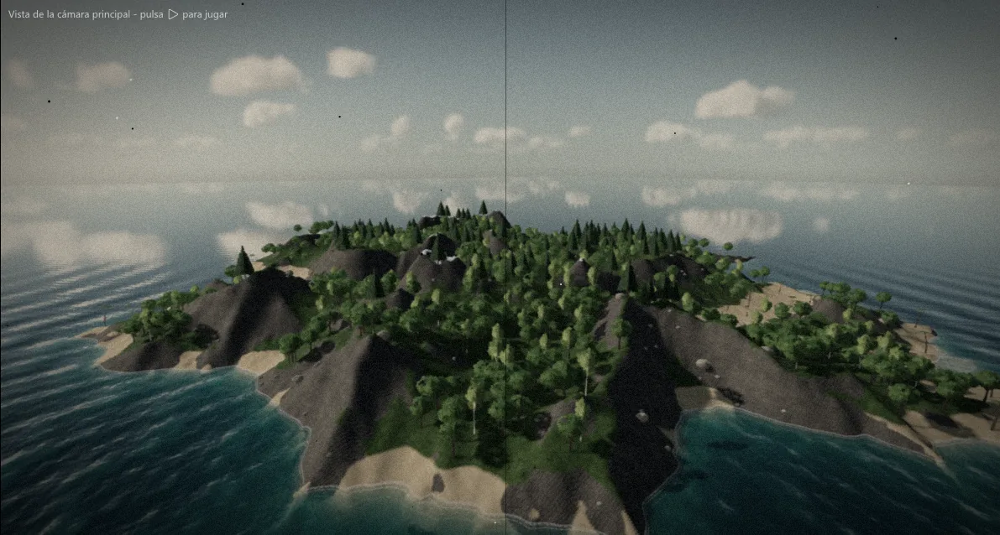 |
Las capturas con el editor entero (y el Inspector con la pila) están en capturas-filtros/editor-<preajuste>.png. Se
hacen con NovaEditor.exe --project game\mundo_abierto_lua --hidden --capture <png> --frames 150 --size 1920x1080 --filtros-prueba <preajuste> --focus Juego (con --filtros-prueba None, la imagen sin filtros).
3. Los filtros#
Los nombres de Lua y las claves de los parámetros van en inglés. Las opciones de una lista se escriben por su
identificador (por ejemplo, palette = "NES").
Retro#
| Filtro (Lua) | Qué hace | Parámetros (clave: valores, por defecto) |
|---|---|---|
Pixelado ("Pixelate") |
Píxeles grandes y cuadrados, sin suavizar | mode: PixelSize o FixedResolution; size: lado del píxel en píxeles de pantalla (4); height: líneas con resolución fija (240 = 320x240 en 4:3) |
Estilo PS1 ("PS1") |
Pocos colores con tramado y el dibujo de la PS1 | bits por canal (5); dither: None, Bayer4x4 o Bayer8x8; ditherStrength (1); vertexWobble: temblor de vértices (0,5); unfilteredTextures: texturas sin filtrar (sí) |
Paleta limitada ("Palette") |
Solo los colores de una paleta | palette: GameBoy (4 verdes), CGA, NES (54 colores), Sepia, BlackAndWhite o Custom (desde una textura); tones de sepia y blanco y negro (4); dither y ditherStrength |
Tele antigua ("CRT") |
Tele de tubo | lines (240), scanlines, phosphorMask, curvature, vignette, edgeGlow (reflejo junto al marco y halo), flicker |
VHS ("VHS") |
Cinta de vídeo | colorShift, noise, tracking (bandas que suben), blur (horizontal), date («PLAY» con la fecha y la hora del PC) |
Película antigua ("OldFilm") |
Cine mudo | color: Sepia, BlackAndWhite o Color; grain, scratches, dust, vignette, flicker, frameJumps |
Cámara de vigilancia / CRT / VHS ("SecurityCam") |
Cámara de seguridad o cinta vieja con texto encima (sección 4) | style: SecurityCam o VHS; scanlines (0,45), curvature (0,3), vignette (0,55), chromatic (0,35), noise (0,35), snow (0,15), signalCuts (0,35), tint (0,75), overlay (sí), seed (0), lines (240); color del tinte |
Estática ("TVStatic") |
Nieve de tele a pantalla completa con bandas que bajan (el cambio de cámara) | bars (0,5), seed |
Paleta propia: con palette = "Custom", arrastra a Paleta propia una imagen pequeña en la que cada píxel es un
color (por ejemplo, una tira de 16 x 1). Se usan hasta 256 colores.
Formas y estilos#
| Filtro (Lua) | Qué hace | Parámetros |
|---|---|---|
Semitono ("Halftone") |
Puntos de cómic, más grandes donde es más oscuro | size (8), shape: Dot, Line o Square; angle (45); ink: Color o Black (en negro solo marca las sombras); color del papel |
ASCII ("Ascii") |
La imagen escrita con caracteres ( .:-=+*#%@) |
size del carácter (8); color: Image, GreenTerminal o BlackAndWhite; background |
Mosaico ("Mosaic") |
Vidriera: piezas irregulares (Voronoi) con plomo | size de las piezas (28), leadWidth; color del plomo |
Contorno de cómic ("Outline") |
Líneas en los bordes de los objetos y en las aristas | thickness (1), depthSensitivity, edgeSensitivity, maxDistance (150 m); color de la línea |
Posterizar ("Posterize") |
Pocos tonos por canal | levels (6) |
El contorno sale de la profundidad de la escena: marca dónde un objeto tapa a otro y dónde la superficie cambia de dirección (las esquinas de una caja), sin tocar los materiales.
Visión#
| Filtro (Lua) | Qué hace | Parámetros |
|---|---|---|
Visión nocturna ("NightVision") |
Verde, más luz, grano y el borde del visor | gain (3), grain, vignette, scanlines; color del fósforo |
Térmica ("Thermal") |
Colores de calor | palette: Iron, Rainbow, WhiteHot o BlackHot; contrast, noise |
Ojo de pez / lente ("Fisheye") |
Distorsión de lente | distortion (positiva: barril; negativa: cojín), zoom |
Aberración cromática ("ChromaticAberration") |
Rojo y azul se separan | amount (píxeles a 1080 líneas), radial |
La térmica usa lo claro que es cada zona: las luces y lo iluminado salen calientes. No usa etiquetas de las entidades.
Utilidad#
| Filtro (Lua) | Qué hace | Parámetros |
|---|---|---|
Desenfoque ("Blur") |
Imagen borrosa | radius (píxeles a 1080 líneas) |
Nitidez ("Sharpen") |
Realza los bordes | amount |
Viñeta de color ("Vignette") |
Oscurece o tiñe los bordes (daño en rojo, veneno en verde) | size, softness; color |
LUT de color ("ColorLut") |
Gradación con una tabla | Textura de la LUT: una tira de N cuadrados de N x N (256 x 16 o 1024 x 32). Sin textura no hace nada |
Desaturar ("Desaturate") |
Quita el color | (la intensidad dice cuánto) |
Tinte ("Tint") |
Tiñe de un color | mode: Multiply, Colorize o Add; color |
Intensidad. Con 0 el filtro no hace nada y la imagen es idéntica a la de sin filtros. Con valores intermedios se mezcla con la imagen de antes. En los que mueven la imagen, la intensidad hace crecer el efecto: el pixelado empieza con píxeles de 1 (sin cambio) y crece hasta su tamaño, y el ojo de pez y la curvatura del CRT, desde una lente plana.
4. Cámara de vigilancia, CRT y VHS#
El filtro Cámara de vigilancia / CRT / VHS ("SecurityCam") da el aspecto de las cámaras de seguridad y las cintas
viejas de un juego de terror, en 2D y en 3D:
- Pantalla: líneas de barrido (
scanlines,lines), pantalla curva (curvature) y viñeta (vignette). - Color: rojo y azul separados hacia los bordes (
chromatic) y el color quitado y teñido de verde grisáceo (tint, con el color del tinte; en estilo VHS, casi sin tinte). - Ruido: grano que cambia en cada imagen (
noise) y nieve de mala señal, con motas blancas (snow). - Cortes de señal (
signalCuts): una banda que baja y tuerce las líneas que pasan por ella, tirones verticales de vez en cuando (la imagen salta y vuelve) y algún fallo con bloques de líneas desplazados y los colores separados. Más = más a menudo y más fuertes.seedcambia cuándo pasan (dos cámaras no fallan a la vez); con la misma semilla y el mismo reloj, la misma imagen. - Texto encima (
overlay): arriba a la izquierda el nombre de la cámara («CAM 03 – SÓTANO»), arriba a la derecha «● REC» con el punto rojo parpadeando, abajo a la izquierda la fecha y la hora que avanzan y abajo a la derecha un texto libre. En estilo VHS: «PLAY ▶» y la fecha de la cinta. La fuente es la propia de 5 x 7 del motor, de estilo monoespaciado: mayúsculas, cifras, tildes, la ñ y/ ( ) ! ? , ' ● ▶(las minúsculas se pasan a mayúsculas).
El texto se cambia en el Inspector (al abrir el filtro, debajo de sus parámetros) o con CameraFilter.SetOverlay:
| Campo | Qué hace |
|---|---|
| Nombre de la cámara | Arriba a la izquierda |
| Fecha y hora de inicio | Vacío: la hora del PC. "1987-10-25 03:14:00": empieza ahí y avanza con el reloj de la escena (el mismo texto en todas las máquinas) |
| Velocidad del reloj | Segundos del reloj por segundo de juego (1 = tiempo real; 60 = una hora por minuto) |
| «● REC» | Arriba a la derecha, parpadeando |
| Fecha y hora | Abajo a la izquierda |
| Texto libre | Abajo a la derecha («PLANTA -1», «SEÑAL DÉBIL»...) |
Cambio de cámara con estática. CameraFilter.Static(0.3) pone nieve de tele a pantalla completa (el filtro
"TVStatic", también por encima de la interfaz) durante ese tiempo: entera casi todo el rato y se va en el último 30 %.
Cambia la cámara a mitad de la estática y no se ve el salto. No hace falta tener el filtro en la pila; sin ningún filtro
también funciona.
-- Cámaras de vigilancia: C cambia de cámara con un golpe de estática (la plantilla «Terror 2D», Camaras.luau)
local CAMARAS = {
{ nombre = "CAM 01 – SÓTANO", centro = Vec3.new(12, 7, 20) },
{ nombre = "CAM 02 – CALDERAS", centro = Vec3.new(19.5, 7, 20) },
}
function Camaras:Cambiar()
CameraFilter.Static(0.35) -- estática a pantalla completa
CameraFilter.Glitch(0.6, 0.6) -- y unos cortes de señal que se van apagando
Audio.PlayOneShot2D("sonidos/Estatica.wav", 0.5)
self._cambio = 0.17 -- a mitad de la estática, el encuadre nuevo
end
function Camaras:Update(dt: number)
if Input.WasActionPressed("CambiarCamara") then self:Cambiar() end
if self._cambio and self._cambio >= 0 then
self._cambio -= dt
if self._cambio < 0 then
self.actual = self.actual % #CAMARAS + 1
self.entity.position = CAMARAS[self.actual].centro
CameraFilter.SetOverlayText(CAMARAS[self.actual].nombre)
end
end
end| Función | Qué hace |
|---|---|
CameraFilter.SetOverlayText(texto, camara?) |
El nombre de la cámara (arriba a la izquierda) |
CameraFilter.SetOverlay({ cameraName, dateTime, timeScale, rec, showDate, corner }, camara?) |
Todo el texto a la vez |
CameraFilter.Static(segundos?, camara?) |
Estática a pantalla completa (0,3 s por defecto; lo normal entre 0,2 y 0,5) |
CameraFilter.IsStatic(camara?) |
true mientras dura la estática |
CameraFilter.Glitch(fuerza?, segundos?, camara?) |
Cortes de señal forzados (fuerza 0..1): un susto o algo que se acerca a la cámara |
CameraFilter.ApplyPreset(preajuste, camara?) |
Lo mismo que Filters.ApplyPreset |
Sin cámara, la principal; si no tiene Filtros de cámara, se le pone.
| Cámara de vigilancia | VHS | Estática |
|---|---|---|
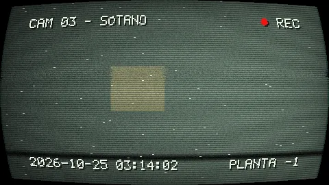 |
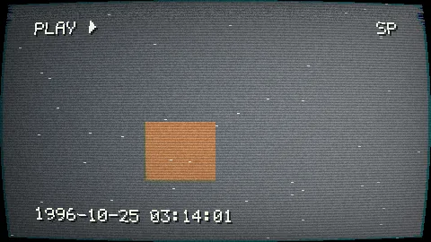 |
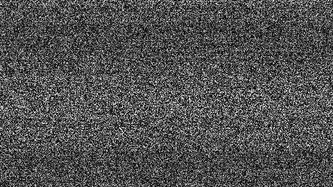 |
Como la tele antigua y el VHS, va por defecto encima de la interfaz (el texto y la interfaz quedan dentro de la «pantalla»).
5. La interfaz y el arma en primera persona#
- Afecta a la interfaz (por defecto, solo en el CRT y el VHS): el filtro se aplica también encima de la interfaz del
juego (los lienzos de interfaz-ui.md), como si la tele o la cinta lo grabaran todo. El resto se
aplican antes de dibujar la interfaz, que queda limpia. Las ventanas de
OnGUI, el perfilador y los avisos del motor nunca se filtran. - Afecta a la capa de vista (por defecto, sí): con la casilla apagada, el arma y las manos en primera persona (la capa de vista) no se filtran. Por ejemplo, un tinte de visión nocturna que no colorea el arma.
Los filtros que afectan a la interfaz van detrás de los demás, aunque en la pila estén antes.
6. Desde Lua#
Los métodos están en el componente Camera. Si la entidad no tiene Filtros de cámara, se le añade.
local camara = self:GetComponent("Camera")
-- Poner o cambiar un filtro (sin intensidad: 1)
camara:SetFilter("CRT", { intensity = 1, curvature = 0.5 })
camara:SetFilter("Palette", { palette = "NES", dither = "Bayer8x8" })
camara:SetFilter("Tint", { color = Color.new(1, 0.2, 0.2), mode = "Multiply", affectsUi = false })
-- Transición: el VHS baja a 0 en 2 segundos (si no estaba, aparece desde 0)
camara:FadeFilter("VHS", 0, 2.0)
-- Leer, quitar y preajustes
local crt = camara:GetFilter("CRT") -- nil si no lo tiene
print(crt.intensity, crt.curvature, crt.fading)
camara:RemoveFilter("CRT")
camara:ClearFilters()
camara:ApplyFilterPreset("PS1")
print(table.concat(camara:GetFilters(), ", ")) -- "Pixelate, PS1"La tabla Filters hace lo mismo en la cámara principal (o en la que se pase al final):
Filters.ApplyPreset("PS1")
Filters.Set("NightVision", { gain = 4 })
Filters.Fade("NightVision", 0, 1.5)
Filters.Get("NightVision")
Filters.Remove("NightVision")
Filters.Clear()
Filters.GetPresets() -- { "PS1", "GameBoy", "RetroTV", ... }
Filters.GetNames() -- { "Pixelate", "PS1", "Palette", ... }Opciones de SetFilter: intensity, enabled, affectsUi, affectsViewLayer, color (un Color o un Vec3),
texture (un asset o su ruta) y los parámetros del filtro por su clave. Un nombre de filtro, una opción o un valor que no
existen dan un error que dice los que hay. Los nombres no miran mayúsculas.
GetFilter devuelve name, intensity (la de ahora, con la transición), enabled, affectsUi,
affectsViewLayer, fading, color (si el filtro tiene color) y sus parámetros.
Recetas:
-- Un golpe: aberración y desenfoque que se van en medio segundo
function Jugador:OnDamage()
local camara = Camera.GetMain():GetComponent("Camera")
camara:SetFilter("ChromaticAberration", { intensity = 1, amount = 12 })
camara:FadeFilter("ChromaticAberration", 0, 0.5)
camara:SetFilter("Blur", { intensity = 1, radius = 3 })
camara:FadeFilter("Blur", 0, 0.5)
end
-- Flashback en sepia que entra y sale
Filters.Set("OldFilm", { color = "Sepia" })
Filters.Fade("OldFilm", 1, 1.0)
-- Cámara de seguridad (con su texto y los cortes de señal: ver la sección 4)
Filters.ApplyPreset("SecurityCam")
CameraFilter.SetOverlayText("CAM 02 – PASILLO")
Filters.Set("Fisheye", { distortion = 0.3 })Las transiciones van con el reloj de la escena (se paran con la pausa). Los filtros son de cada máquina: no se envían por la red (cada jugador ve los suyos).
El autocompletado del editor de scripts y de VS Code propone los nombres de filtro y de preajuste entre las comillas
(camara:SetFilter("|"), Filters.ApplyPreset("|")), y nova.d.luau tiene los tipos.
7. Rendimiento#
- Cada filtro es una pasada barata y los activos se juntan en el menor número de pasadas de pantalla completa:
- los que mueven la imagen (pixelado, ojo de pez, saltos de la película) y los que solo cambian el color (paletas, PS1, posterizar, tinte, LUT...) van en la misma pasada, todos los que haya;
- los que leen alrededor de cada píxel (CRT, VHS, desenfoque, nitidez, aberración, semitono, ASCII, vidriera, contorno) van uno por pasada, con los que cambian el color detrás.
- Con todos apagados (o con intensidad 0) no hay ninguna pasada: el render es idéntico al de sin filtros.
- El Inspector enseña las pasadas del último frame.
Medido en la GPU (RTX 5060 Ti) a 1920 x 1080, con tres filtros:
| Filtros | Pasadas | GPU |
|---|---|---|
| Pixelado + PS1 + viñeta | 1 | 0,22 ms |
| Aberración + CRT + desaturar | 2 | 0,35 ms |
| Desaturar + VHS + tinte | 2 | 0,41 ms |
8. Límites#
- El temblor de vértices y las texturas sin filtrar del estilo PS1 se ven en las mallas normales (con huesos o sin ellos). El terreno, la vegetación, el agua y las partículas no tiemblan.
- La térmica sale del brillo de la imagen, no de etiquetas «calientes» en las entidades.
- El contorno usa la profundidad: no marca las líneas dentro de una textura, solo la forma de los objetos. En el arma de la capa de vista las líneas pueden ser más gruesas o más finas que en el mundo.
- Un filtro de cada tipo por cámara (
SetFilter("Blur", ...)cambia el que hay). - La fecha del VHS es la del PC, en inglés (
PLAY PM 6:16 / OCT. 19 2026), con la fuente propia de 5 x 7 del motor (la misma de los caracteres del filtro ASCII). - El texto de la cámara de vigilancia tiene 4 bloques de una línea de hasta 32 caracteres cada uno.